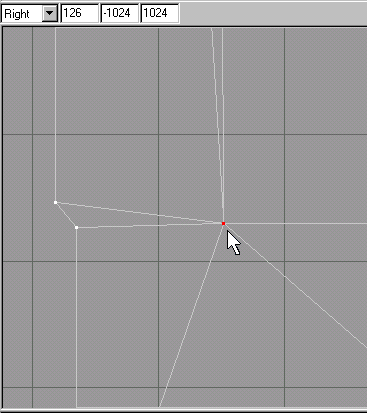
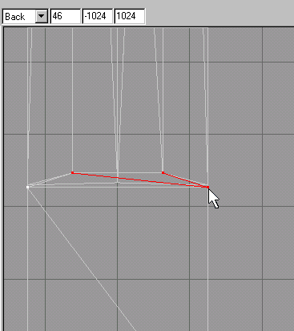
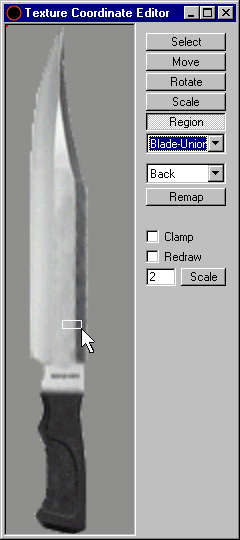

If you use the drop down list on the viewport interface, you can select the "Right" viewport. Do the same as before in creating this face. We need to hide the 2 vertices that will interfere with our face creation in the "Back" viewport by switching to the "Select" tool and have the "Vertex" turned on in the "Selection Options." In the "Right" viewport select the vertices as shown in Figure 1.31. Again, click on "Edit->Hide Selection" on the menu selections.

Figure 1.31 Selecting the vertices to be hidden
Switch to the "Back" viewport and sew this up to complete the back blade portion of the knife. You will need to chose the "Face" tool once again. Now it should be easy to create these 2 remaining faces of the back of the blade as Figure 1.32 illustrates.

Figure 1.32 Creating the back face to finish the back blade portion
At this point you may notice that your top portion of the blade overlaps that of the lower portion. We can correct this by clicking the"Edit->Unhide All" in the menu selections first. Next, you will switch to the "Select" tool and have the "Vertex" turned on in the "Selection Options," and using the "Right" viewport, you will select the vertices pictured in Figure 1.33. Then you will click on the "Move" tool button and lock down the "X, and "Y" axis. (Refer to Figure 1.9 for an example of locking the axis). Move the vertices to the left to align with the rest of the vertices that appear to be in a straight vertical line.
Figure 1.33 Moving the back vertices to align with the top portion
Now you may want to fix the texture coordinates. To do this refer to Figures 1.27 and 1.28. The only difference here will be the viewport you will be looking at to apply the texture.Remember to reassign these new faces to a group and you should have at least 2 groups. You can leave the "Ignore Backfaces" check box uncheck and select both the right and left faces of the two faces that we created as Figure 1.30 show the faces to be selected. You should "Regroup" these and rename them to something that makes sense such as: "Blade-Union-LR" and "Blade-Union-Back." Pick the "Blade-Union-LR" first. Then you will choose the "Left" viewport in the "Texture Coordinate Editor" and do a "Region" box in such as illustrated in Figure 1.34. Why did I do this? First we have no long area that has dark metal on it, so we are going to pretend that we do and then "Rotate" and "Move" it to fit in the dark metal area to the right. The procedure will be the same for the Blade-Union-Back" group, except you will be using the "Top" viewport in the "Texture Coordinate Editor."

Figure 1.34 Drawing a simulated region area to map the texture to the faces
Click the "Remap" button. Next, Click the "Rotate" button, and rotate the faces to be in a vertical fashion, rather than a horizontal fashion. Click and drag in the window. It will take some practice to achieve the direction that you want to rotate it in. As you are doing this you may see some distortion that will have to be corrected by the "Scale" feature of the "Texture Coordinate Editor." Click on this button and click and drag in the window. Like the rotate feature it will take some practice to achieve the directions to move in to scale it properly. Finally, click the "Move" button and move it to the dark metal are of the blade.